Ciudadanos
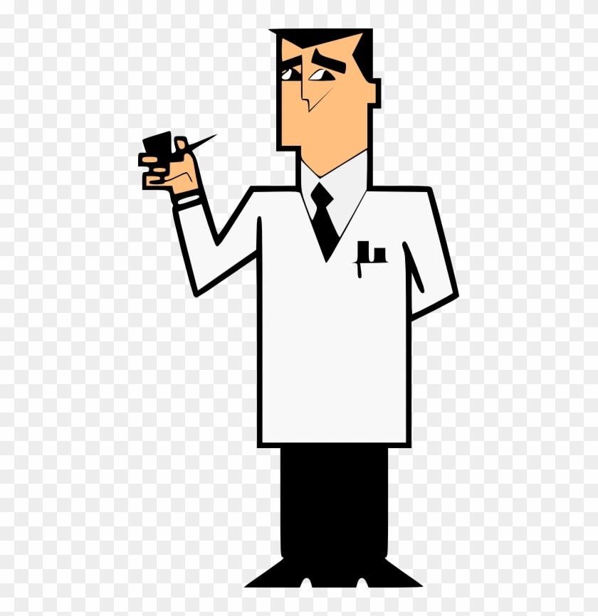
Profesor Utonio
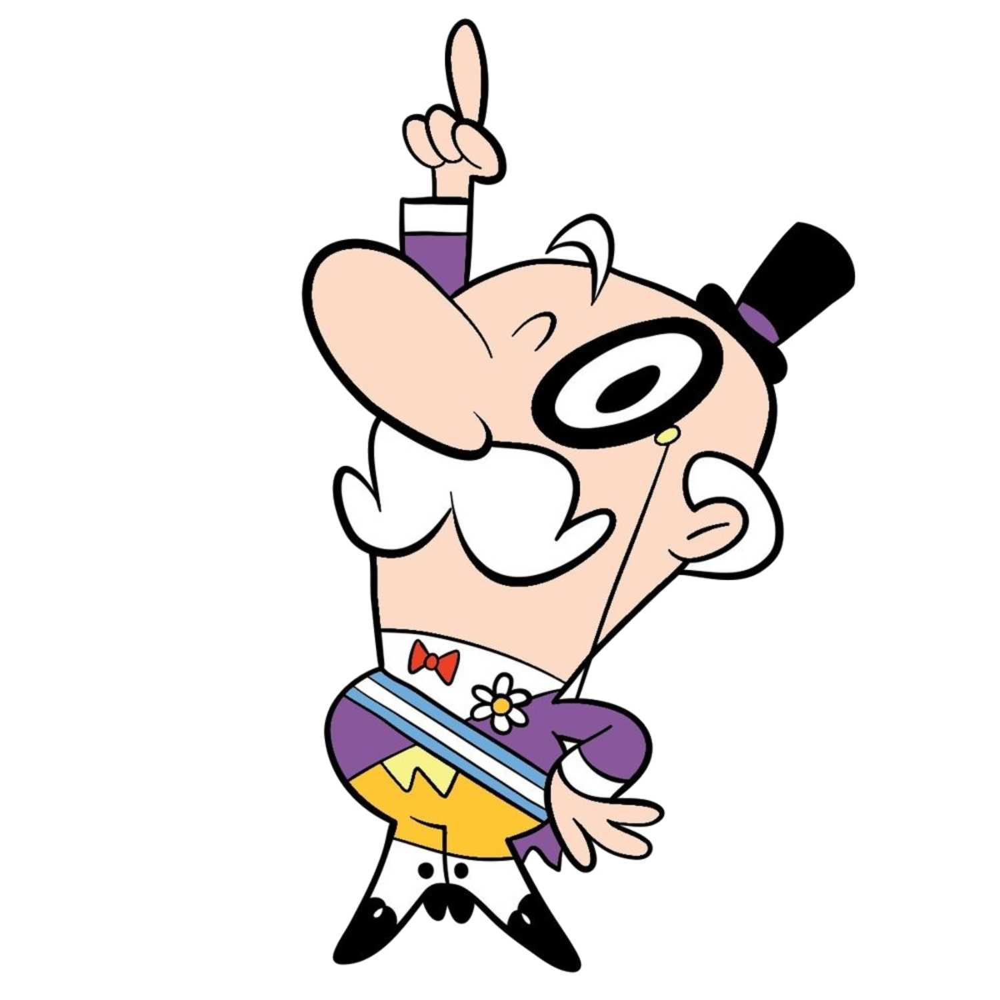
Alcalde
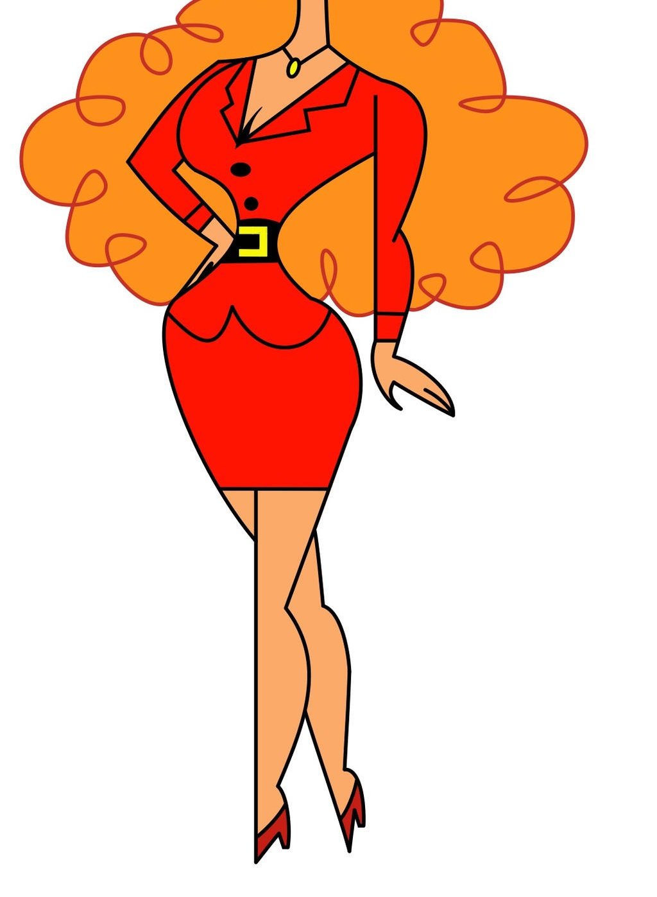
Señorita Belo
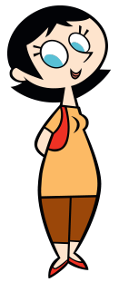
Señorita Keane
Profesor Utonio
El creador de las Chicas Superpoderosas. Es muy sobreprotector de las chicas, afectuoso y paternal, suele levantarles el ánimo cuando éstas se encuentran tristes. Si bien se lo ve asustadizo puede ser estricto con las niñas cuando se necesita.
Sus mejores inventos suelen ser aquellos que crea por accidente. El resto suelen no funcionar o tienen un gran defecto.
No suele tener suerte en el amor. Sus relaciones con la Señorita Keane, la Señorita Bello y Sedusa no prosperaron.
Es el encargado de llamar a las Chicas Superpoderosas cuando hay peligro azotando la ciudad, aunque también las llama para cosas triviales como abrir su frasco de pepinillos (por los cuales tiene una obsesión).
Es muy torpe y constantemente necesita ayuda de su secretaria, la Señorita Bello.
Si bien está casado (con una mujer que luce igual a él) no parece querer mucho a su esposa, más bien pareciera tener mayores sentimientos por su atractiva secretaria.
Si llega a perder su sombrero puede volverse tan fuerte como las Chicas Superpoderosas.
Es la secretaria del Alcalde y Diputada de Saltadilla. Es tan hermosa como inteligente, siempre está atendiendo los asuntos de la alcaldía.
Su rostro no suele mostrarse, ya sea porque objetos tapan su cara o la cámara corta todo por encima de su cuello.
No parece estar en una relación amorosa, aunque se ha llegado a insinuar que está enamorada de su jefe.
Es la maestra de las Chicas Superpoderosas. Se la muestra como una persona paciente, comprensiva, maternal y protectora de sus alumnos.
Prohíbe completamente la violencia en la escuela, no importa si enemigos están atacando o una crisis se está desatando, siempre intentará encontrar una solución pacífica.
Demostró tener conocimiento sobre la física relativa, desarrollando complejas ecuaciones a gran velocidad.
Villanos
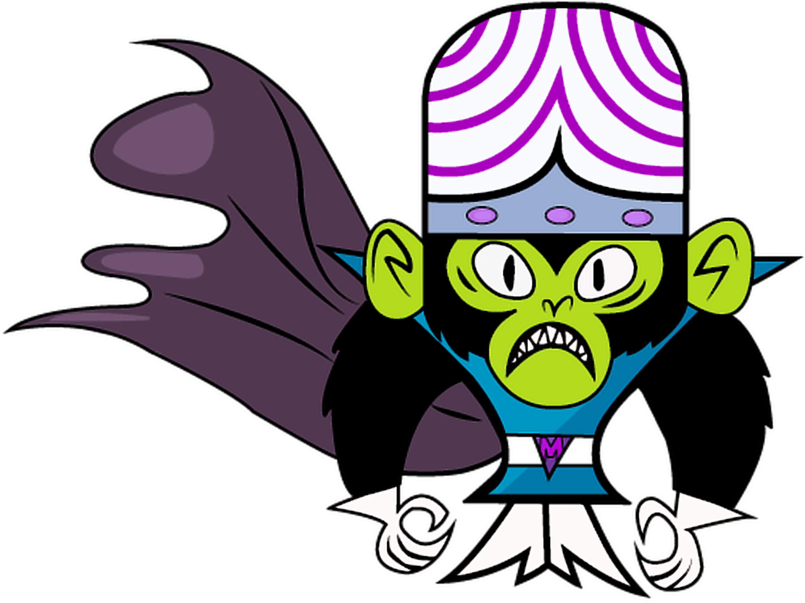
Mojo Jojo
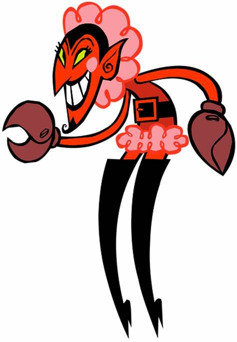
Él
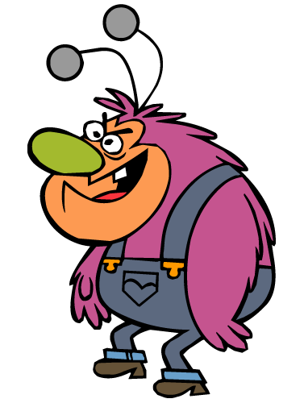
Peludito
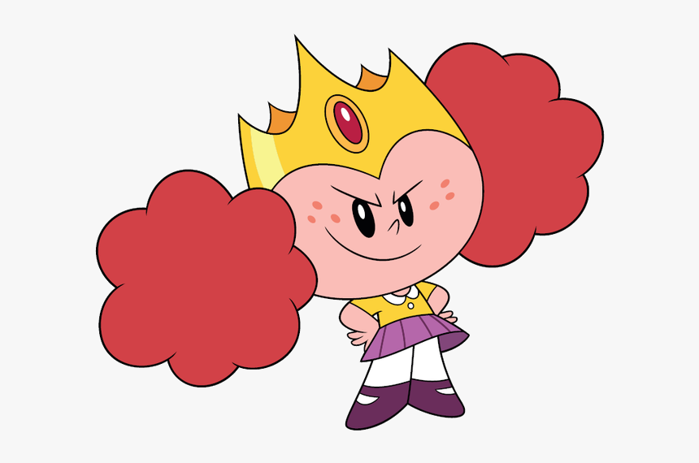
Princesa Morbucks
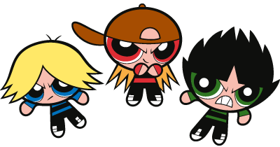
Chicos Superolorosos
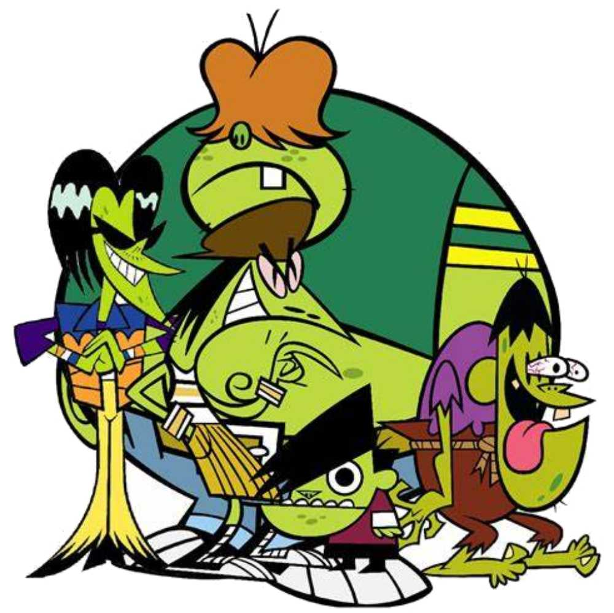
Banda Gangrena
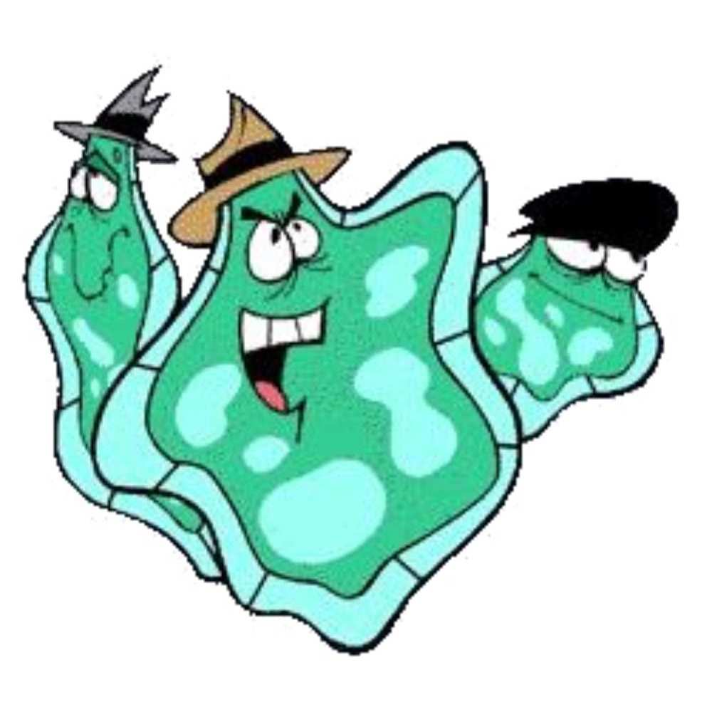
Banda Ameba
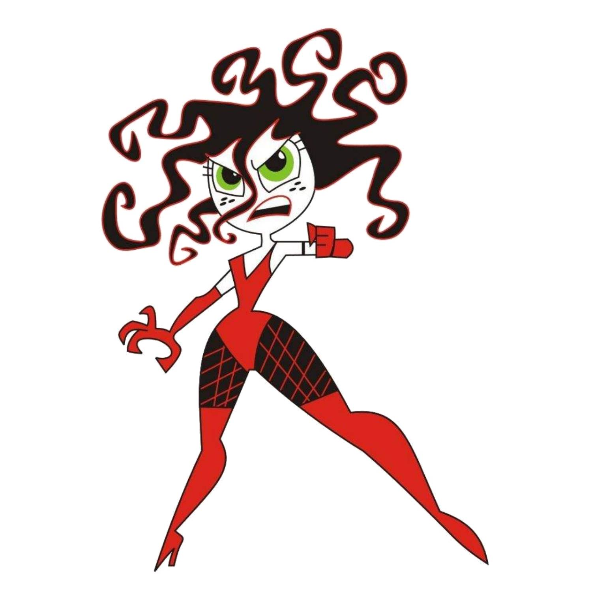
Sedusa
Es el villano principal de la serie y quien más veces ha logrado derrotar a las Chicas Superpoderosas.
Se trata de un científico chimpancé que busca conquistar el mundo, que crea un sinfín de máquinas para poder pelear y realizar sus crímenes. Posee una gran inteligencia y un extenso vocabulario. Él es quien creó a los Chicos Superolorosos.
Cuando no está cometiendo atrocidades se lo puede ver comportándose como un ciudadano normal, haciendo sus compras, actuando amablemente. Incluso es cordial con las Chicas Superpoderosas cuando no se encuentran batallando. Además parece haber entablado una amistad con otros villanos.
Es el enemigo más poderoso y malvado de las Chicas Superpoderosas.
Es un demonio extravagante, rey de la oscuridad, otros demonios y fantasmas. Misterioso, diabólico, dominante y sádico son cualidades que lo definen. Tanto ciudadanos como villanos le tienen miedo.
Si bien tiene el poder para destruir el mundo fácilmente, prefiere entablar juegos mentales con las Chicas para entretenerse, lo que lo suele llevar a subestimarlas y, posteriormente, a la derrota.
Es un villano recurrente de las Chicas Superpoderosas.
Es una mutación de oso peludo con antenas que vive en el bosque que está al lado de Saltadilla junto a un montón de animales.
De personalidad avara, agresiva y antisocial, odia que la gente se acerque a su propiedad y atacará a cualquiera que lo intente.
Su único amigo es Joe, su banyo.
Es una villana recurrente de las Chicas Superpoderosas.
Se trata de una niña rica, mezquina, egoísta, rencorosa y manipuladora, que quería ser parte del grupo de heroínas para ser popular. Al negársele esta oportunidad toma la decisión de que si ella no puede ser una Superpoderosa, entonces no habrán Superpoderosas.
Lo único que ama por encima de ella es el dinero.
Trío de niños villanos que representan la contraparte malvada de las Chicas Superpoderosas, creados por Mojo Jojo para destruirlas.
Así como las niñas fueron creadas a partir de “Azúcar, flores y muchos colores” ellos fueron creados a partir de pelos de axila, caracoles, la cola de un perro y agua de inodoro que contenía Sustancia X.
Si bien fueron creados a imagen y semejanza de las Chicas, teniendo los mismos superpoderes, su mayor debilidad son los besos de las niñas puesto que pueden contagiarlos de piojos.
Banda de villanos recurrentes de las Chicas Superpoderosas, compuesta por Ace, Gran Billy, Arturo, Serpiente y Genio. Se caracterizan por tener la piel verde.
Su nombre de pandilla es un juego de palabras entre “gang” (“pandilla” en inglés) y la afección de piel.
Viven en el depósito de chatarra de Saltadilla y suelen cometer delitos menores, como vandalismo u hostigamiento.
Un trío de amebas considerados la banda de villanos más tonta de Saltadilla, compuesta por Jefe, Slim y Junior. Los tres llevan sombrero.
Su mayor sueño es ser considerados villanos de renombre y ser enviados a la cárcel, pero sus cerebros son tan primitivos que no pueden desarrollar un plan más malvado que cruzar mal la calle o tirar basura en la vía pública.
Su mayor crimen fue robar naranjas.
Si realmente logran causar problemas es por pura casualidad.
Villana que usa sus encantos femeninos y rápido ingenio para influir en los hombres para que hagan su voluntad.
Pelea utilizando su cabello como látigo.
Su nombre y cabello están inspirados en Medusa, la gorgona de la Mitología Griega.
Durante un breve período fue la novia del Profesor Utonio.